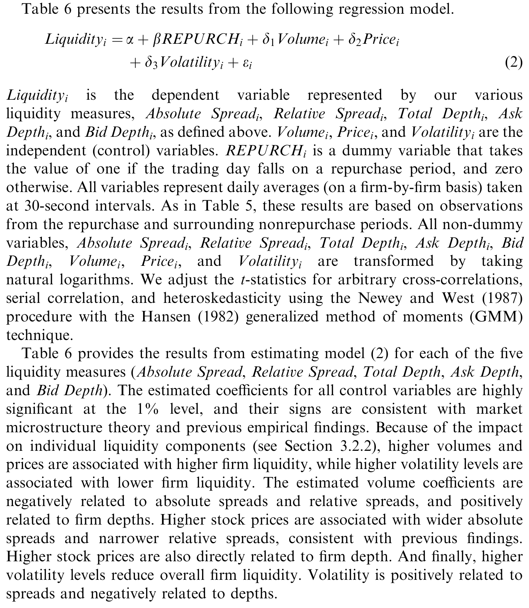
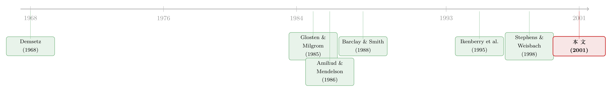

买回股票的那一天，老板比谁都先知道
本文读的是 Brockman & Chung (2001, Journal of Financial Economics)：借助香港交易所「次日必须披露」的独特制度，作者第一次拿到了 5,111 笔真实的公开市场回购的精确执行日，证明经理人确实有显著的「择时」能力——他们买回自家股票的成本，比一个随机买入策略平均低 9%；而代价是，正因为市场知道屋里有个「知情的内部人」在买，回购当天买卖价差变宽、深度变浅、逆向选择成本陡增。回购不是免费的午餐，它用流动性付了账。
1 一桩查不清的旧案
公司回购自己的股票，这件事本身平平无奇。真正让人挠头的，是两个缠在一起、却几十年都验不干净的问题：
第一，经理人买回股票，到底是不是在「择时」？也就是说，他们是不是趁着自己知道、而外人不知道的私有信息，专挑股价被低估的时候出手？
第二，如果真有这么个「知情的内部人」在二级市场上买买买，那别的投资者会不会被他吓退、从而让这只股票变得更难交易？
这两个问题，Barclay and Smith (1988) 早就清清楚楚地提了出来。可问题是——没人能验。
为什么验不了？卡在一个最朴素的地方：在美国，公司压根不必告诉任何人它哪天、以什么价、买了多少股。宣布了回购计划的公司，没有义务真去执行；真去执行的公司，也没有义务告诉你执行的细节。于是研究者手里只有按月、按季拼凑出来的估计值（Stephens and Weisbach, 1998），或者靠公司自愿填回来的问卷（Cook et al., 1999a）。你想研究「择时」，却连人家到底哪天扣的扳机都不知道——这案子怎么查？
这正是本文的全部巧思所在：它没有发明新方法，它找到了一块能让老方法第一次用上的「干净玻璃」。
2 一块叫香港的玻璃
接着，一个自然的问题是：到哪儿去找一个肯把回购细节全抖出来的市场？
答案是香港。香港交易所（Stock Exchange of Hong Kong, SEHK）有一条对研究者来说价值连城的规矩——披露要求：任何一天买回的股票，必须在下一个营业日上午 9:30 之前报告给交易所，交易所汇总后，通常在 10:00 开盘前后就把信息（含价格和数量）分发给数据商。换句话说，一笔回购从发生到全市场皆知，最多隔一个营业日。
这跟美国「你爱说不说」的环境，是两个极端。于是作者得以从 1991 年香港首次允许回购开始，把全部真实回购一笔不漏地捞出来：最终样本横跨 81 个月，包含 190 家回购公司、5,111 笔回购，合计 2,571,493,455 股、价值 HK$8.5（约 US$1.09）十亿。典型的一家公司回购约 26.90 次，每次买回 566,244 股、约 HK$2,138,036（US$274,107）。
这里要先按下一个伏笔：平均每笔回购，占当天总成交量的 44.48%，却只占公司总股本的 0.08%。一个人一天买走市场上近一半的成交——这只手，市场不可能看不见。 这个数字，是后半篇故事的全部张力来源。
顺便说，香港的制度本身就替作者排除了不少噪声。「价格敏感期」（如年报披露前一个月）禁止回购；「25% 规则」限定一个月内回购不得超过上月成交量的 25%；还禁止向「关连人士」（董事、大股东等）回购。这些规则把内幕交易的另一些渠道堵死了，剩下的「择时」更接近纯粹的「挑时点」。
香港市场还有一个对识别很关键的结构特征：它是一个彻底连续的电子限价订单市场（continuous electronic limit order market），没有指定做市商。买卖价差就是最低卖价与最高买价之差；深度（depth）则定义为挂在最优买价和最优卖价上的全部股票的市值。没有做市商这件事很重要——它意味着流动性是由众多挂限价单的普通交易者「自发」提供的，那么当这些人嗅到危险时的撤退，就会赤裸裸地写在价差和深度上。
3 第一问：他们真的会择时吗？
然后，怎么证明「择时」？这里是本文方法上最漂亮的一招：自助法（bootstrap）。
思路朴素得近乎狡猾——作者想把回购决策里除了「时点」以外的一切都摁住不动，只让时间随机变化，看看真实的成本能不能跑赢「瞎买」。具体地，对每一个公司-年（firm-year，即从一次股东会授权到下一次授权之间的窗口），自助法把三样东西当成给定：(1) 授权回购的期间（决议通过后的一年）；(2) 这一年里实际回购的天数；(3) 每个回购日实际买回的股数。然后，在同一个授权窗口里，随机另选若干天，按照同样的股数去买，重复 50,000 次，得到一个「瞎买成本」的经验分布，再拿真实成本去比。
举个作者给的例子：亚洲标准国际集团（ASIG）1996 财年在 6 个交易日回购，真实总成本 HK$3,705,100。把这 6 天随机重排 5 万次后，瞎买成本的最小、均值（中位数）、最大分别是真实成本的 84%、121%（121%）、152%；5 万次里只有 3,225 次比真实成本还低。于是这家公司的「伪 p 值」（pseudo p-value）是 6.45%——已经隐隐看出，真实回购买得比随机更便宜。
把这套程序铺到全部 370 个公司-年上，结果相当干净（如表 2 的市场择时统计）：瞎买成本的均值（中位数）是真实成本的 109%（104%），而且每一年的均值和中位数都超过 100%；按 5%（1%）显著性，37.3%（25.7%）的公司-年表现出显著的择时能力。换句话说，随机策略平均要多花约 9% 的钱才能买到同样的股票——经理人确实在「挑便宜的时候买」。
作者特别强调了一句很要紧的话：现实里回购的目的从来不止「低买」一个（还有调整资本结构、履行高管期权、防御敌意收购……）。这些「杂念」只会让择时更难被检验出来。 也就是说，但凡公司有别的动机掺和进来，检验天然偏向「无择时」的原假设。在这种不利的设定下还能挖出 37% 的显著比例，证据反而更可信。
这是据作者所知，第一份关于真实公开市场回购的显著择时证据。（关于经理人如何在披露制度的缝隙里安排回购的执行节奏，可参见《买回自己的股票，他们到底怎么「下手」？》；而关于「宣布了却不真买」的另一面，见《宣布回购，却又不回购》。）
4 但真正关键的一步，在第二问
到这里，故事其实才走到一半。一个会择时的内部人在场，对别的人意味着什么？
这就是 Barclay and Smith (1988) 留下的那道分叉路口，两条路指向完全相反的方向：
- 信息不对称假说（information-asymmetry hypothesis）：经理人手里有外人没有的信息（Jaffe, 1974; Seyhun, 1986），当市场怀疑有这样一个「知情交易者」在买，提供流动性的人会要么提高报价、要么干脆撤单——结果是价差变宽、深度变浅。
- 竞争性做市商假说（competing-market-maker hypothesis）：公司自己跳进来当买方，等于多了一个流动性的提供者，反而可能让市场更好交易。
孰是孰非？过去的研究（Wiggins, 1994; Singh et al., 1994; Miller and McConnell, 1995; Franz et al., 1995）只能围着宣告日打转——而宣告日什么都没真发生，做市商只是在「预期」未来可能有人来交易。本文的杀手锏在于：它能精确锁定真正发生交易的那一天，以及次日公开披露那一天。这才是检验信息不对称的正确时点。
作者用了 May 1996 至 Aug 1999 的日内（intraday）数据，每 30 秒一笔，覆盖 103 家公司、1,526 笔回购、27 个月。把回购日的价差、深度，跟非回购的基准日比，结论是：
- 价差在回购期间显著变宽，且这个结果在加入价格、成交量、波动率等控制变量、以及换用不同模型设定后都稳健；
- 深度乍看略有改善（经理人挂限价买单，符合竞争性做市商假说的一面）——但一旦控制住同期的价格、成交量、波动率，深度其实是恶化的。
于是反转出现：综合来看，回购活动净增加了交易成本、压低了流动性。竞争性做市商那条路，输了。
5 把价差拆开，看见「逆向选择」
最后，也是本文最锋利的一刀：把买卖价差拆开，单独量出其中的逆向选择成分（adverse selection component）。
为什么非拆不可？因为价差变宽，本可以有很多种解释（库存成本、订单处理成本……）。但「信息不对称」这个假说有一个唯一的、可证伪的指纹：如果价差变宽真是因为市场怕了那个知情的内部人，那么变宽的部分应该集中体现在逆向选择成分上——而且逆向选择上升，会同时带来更宽的价差和更浅的深度（这一正一反的联动，正是 Brockman and Chung, 1999a 与 Heflin and Shaw, 2001 记录过的规律）。
作者对若干个价差分解模型逐一估计，结论高度一致：相对于非回购基准，回购期间的逆向选择成分显著更高（如表 6 所示）。这枚指纹，干净利落地指向了信息不对称假说。

Table 6: presents the results from the following regression model
更妙的是收尾那一笔：价差和深度，通常会在次一个交易日回到基准水平——也就是公司披露「那个买家是我」的那一天。市场一旦知道知情交易者是谁、且其信息已成为公开信息，恐惧就消散了，流动性随之复原。这一进一出，恰好把整条信息不对称的逻辑链首尾扣死。
（关于逆向选择如何从买卖价差里抬高了投资者的「要求回报」，可参见《价差是真的，成本却是假的——逆向选择究竟从哪里抬高了「要求回报」》；关于价差里的逆向选择如何反过来预言公司信用，见《评级藏在买卖价差里》。）
6 文献脉络
把镜头拉远，这篇论文其实站在两条河流的交汇处。
一条河，是买卖价差的微观结构。从 Demsetz (1968)、Tinic (1972) 把流动性当成一种「有成本的服务」开始，到 Stoll (1978)、Ho and Stoll (1983) 的库存模型，再到 Copeland and Galai (1983)、Glosten and Milgrom (1985)、Easley and O'Hara (1987) 把信息不对称正式写进价差——人们逐渐明白，价差里有一块，是付给「怕遇上知情交易者」的保险费。随后 Glosten and Harris (1988)、Lin et al. (1995)、Huang and Stoll (1997) 发展出把价差拆成几块的计量方法，这正是本文第三刀所用的工具。
另一条河，是回购与流动性。Amihud and Mendelson (1986) 奠定了「流动性会进入资产定价」的基调；Barclay and Smith (1988) 提出那个核心命题——回购之所以没有彻底取代股利，可能正是因为它带来了更高的流动性成本。沿着回购的实证一路走来，Ikenberry et al. (1995) 记录了宣告后的市场低估反应，Stephens and Weisbach (1998) 在美国数据里费力地估计真实回购量，Cook et al. (1999a) 则只能靠问卷。

本文恰好坐在这两条河的汇流处：它用第一条河的拆解工具，去回答第二条河悬而未决的命题，而让这一切成为可能的，是香港那块独一无二的披露玻璃。
7 评论与延伸（Q&A + 研究方向）
(a) 几个可能的疑问
Q：自助法证明的「择时」，会不会只是因为价格本身就有均值回复，随便挑哪天买都「显得」便宜？
不会，这正是自助法设计的精妙处。它把比较的基准设成「在同一个授权窗口、同样的天数、同样的股数下随机选日」，所以价格的整体走势、回购规模都被摁住了，唯一变化的只有「时点」。真实成本系统性地低于随机分布（均值 109% 真实成本），剩下的解释只能是经理人挑对了时点。
Q：价差变宽、深度变浅，会不会只是因为回购本身放量、造成了机械的价格冲击，而不是「信息」？
这恰恰是作者要拆价差的原因。机械的成交量冲击不会特意抬高逆向选择成分；而数据显示变宽的部分集中在逆向选择上，且价差和深度的反向联动、以及次日披露后的复原，都是「信息」而非「流动性需求」才能解释的模式。
Q：香港没有做市商，结论还能推广到有做市商的美国吗？
要小心。香港是纯限价订单市场，流动性由分散的限价单提供者自发供给，这让「知情交易者吓退流动性」的机制看得格外清楚。在有做市商的市场，做市商可能用别的方式（如调整库存、报价深度）吸收冲击，量级未必一样——但信息不对称这个方向是一致的。
Q：每笔回购占当天成交量 44%，会不会样本里都是些极小、极不流动的股票，结论是特例？
回购公司确实在价格、市值、成交量上略低于全市场，但样本相当有代表性（约 27% 的上市公司都做过回购），且回购日有交易的天数比例（87.32%）还高于非回购公司（81.23%）。不过「高成交占比」本身是结论的一部分——正因为这只手足够大，市场才看得见、才会反应。
Q：作者排除了 1997 亚洲金融危机那 13 个月，会不会是挑数据？
这是惯例做法（参照 Stephens and Weisbach, 1998; Ikenberry et al., 1995 对崩盘期的处理）。危机期间月均回购 191 笔、远超平时的 63 笔，是被恐慌驱动的异常行为，混进来反而污染「常态择时」的检验。作者也声明把危机期纳入后重做了全部检验，结论无实质改变。
Q：择时能力是真本事，还是只是「内部人天然知道得多」？
本文不区分二者，它衡量的是结果层面的择时（买得比随机便宜），而非把信息优势从运气里剥离。作者也坦言择时能力与整体市况、公司特征相关，说明其中有可被预测的成分——但「能力 vs. 信息」的分解，本文没做，也做不了。
(b) 几个可能的研究问题与提案
1. 把这套「披露玻璃 + 自助法」搬到公司债回购上。 【经济故事】公司也会在二级市场回购自己的债券，尤其在信用利差走阔、自家债被「错杀」时。如果经理人对自家信用状况有私有信息，债券回购应同样表现出择时，且会推高债券市场的逆向选择成分。 【可行性】中。难点在于债券交易稀疏、且多数市场没有香港式的次日强制披露；TRACE 提供成交但不标明回购方身份。需要找到一个有债券回购披露的制度环境（部分欧洲市场或特定要约回购），识别才站得住。
2. 次日披露这一「自然的信息释放」，能不能做成事件研究的清洁实验？ 【经济故事】本文已经发现价差/深度在披露次日复原。把披露时点当成一次外生的「信息从私有变公开」的冲击，可以更精细地估计信息不对称的半衰期：流动性多快恢复、不同公司（分析师覆盖多寡、持股集中度高低）恢复速度差异如何。 【可行性】高。数据就在本文的日内库里，识别来自制度规定的披露时滞（次日 9:30/10:00），近乎实验。是本文最直接、最 doable 的延伸。
3. 外资持有人占比，是否放大了回购的逆向选择成本？ 【经济故事】若本地内部人相对外资投资者有更大的信息优势，那么外资持股越重的股票，回购引发的逆向选择成分上升应越剧烈——这把「内部人 vs. 外部人」的信息鸿沟，与「本地 vs. 外资」的鸿沟接上了。 【可行性】中。需要个股层面的外资持股数据（香港部分可得，或转向有外资持股披露的市场），与日内价差分解结合。识别上要小心外资持股与流动性的内生关系。
4. 「会择时的回购」能否预测长期超额收益？ 【经济故事】如果择时反映真实的低估信息，那么择时能力最强的那批回购，事后应有更高的长期异常收益（呼应 Ikenberry et al., 1995 的低估反应）。这把「短期成本节省」与「长期价值发现」连了起来。 【可行性】高。本文已有按公司-年的择时显著性度量，配上事后买入持有收益即可检验。主要威胁是长期收益检验本身的基准模型敏感性。
8 我的判断
这篇论文的贡献，不在方法的新，而在让一个搁置了十几年的命题第一次变得可检验。Barclay and Smith (1988) 提出的「回购是否损害流动性」，过去只能在宣告日的迷雾里打转；本文用香港的强制披露，把「真实交易日」和「信息公开日」两个关键时点都钉死，再用自助法把「择时」从「运气」里干净地分离出来——三步环环相扣，从「经理人会择时」走到「市场感知到知情交易」，再到「逆向选择成分上升、披露后复原」，逻辑闭环漂亮。结论也有清晰的政策含义：回购相对股利的「税收优势」，被更高的流动性成本部分抵消了，这为「为什么股利没有消失」提供了一块微观证据。
但有两处值得对识别打问号。其一，「择时能力」与「内部人天然信息多」无法分离——本文衡量的是结果，不是机制，我们无法判断那 9% 的成本节省里有多少来自真本事、多少来自身份带来的信息禀赋。其二，纯限价订单、无做市商的市场结构，是一把双刃剑：它让信息不对称的机制无比清晰，却也让结论的外推需要谨慎，有做市商的市场吸收冲击的方式不同，量级未必平移。
我最想看到的后续，是第 2 个提案：把「次日披露」当成一次外生的信息释放，去精确测量不同信息环境下流动性恢复的速度。本文已经无意中把这个实验摆在了桌上，只差有人把它正式做出来。
参考文献
Amihud, Y., Mendelson, H. (1986). Asset pricing and the bid–ask spread. Journal of Financial Economics 17, 223–249.
Barclay, M., Smith, C. (1988). Corporate payout policy: cash dividends versus open-market repurchases. Journal of Financial Economics 22, 61–82.
Brockman, P., Chung, D. Y. (1999a). An analysis of depth behavior in an electronic, order-driven environment. Journal of Banking and Finance 23, 1861–1886.
Brockman, P., Chung, D. Y. (2001). Managerial timing and corporate liquidity: evidence from actual share repurchases. Journal of Financial Economics 61(3), 417–448.
Cook, D. O., Krigman, L., Leach, J. C. (1999a). On the timing and execution of open market repurchases. Working Paper, University of Colorado.
Copeland, T. E., Galai, D. (1983). Information effects on the bid–ask spread. Journal of Finance 38, 1457–1470.
Demsetz, H. (1968). The cost of transacting. Quarterly Journal of Economics 82, 33–53.
Easley, D., O'Hara, M. (1987). Price, trade size, and information in securities markets. Journal of Financial Economics 19, 69–90.
Efron, B. (1979). Bootstrap methods: another look at the jackknife. Annals of Statistics 7, 1–26.
Franz, D. R., Rao, R. P., Tripathy, N. (1995). Informed trading risk and bid–ask spread changes around open market stock repurchases in the NASDAQ market. Journal of Financial Research 18, 311–327.
Glosten, L., Harris, L. E. (1988). Estimating the components of the bid–ask spread. Journal of Financial Economics 21, 123–142.
Glosten, L., Milgrom, P. (1985). Bid, ask, and transaction prices in a specialist market with heterogeneously informed traders. Journal of Financial Economics 14, 71–100.
Heflin, F., Shaw, K. W. (2001). Adverse selection, inventory holding costs, and depth. Journal of Financial Research 24, 65–82.
Huang, R. D., Stoll, H. R. (1997). The components of the bid–ask spread: a general approach. Review of Financial Studies 10, 995–1034.
Ikenberry, D., Lakonishok, J., Vermaelen, T. (1995). Market underreaction to open market share repurchases. Journal of Financial Economics 39, 181–208.
Jaffe, J. F. (1974). Special information and insider trading. Journal of Business 47, 410–428.
Lin, J.-C., Sanger, G., Booth, G. G. (1995). Trade size and components of the bid–ask spread. Review of Financial Studies 8, 1153–1183.
Miller, J. M., McConnell, J. J. (1995). Open-market share repurchase programs and bid–ask spreads on the NYSE: implications for corporate payout policy. Journal of Financial and Quantitative Analysis 30, 365–382.
Seyhun, H. N. (1986). Insiders' profits, costs of trading, and market efficiency. Journal of Financial Economics 16, 189–212.
Singh, A. K., Zaman, M. A., Krishnamurti, C. (1994). Liquidity changes associated with open market repurchases. Financial Management 23, 47–55.
Stephens, C. P., Weisbach, M. S. (1998). Actual share reacquisitions in open-market repurchase programs. Journal of Finance 53, 313–333.
Stoll, H. R. (1978). The pricing of security dealer services: an empirical study of NASDAQ stocks. Journal of Finance 33, 1153–1172.
Tinic, S. (1972). The economics of liquidity services. Quarterly Journal of Economics 86, 79–93.
Wiggins, J. B. (1994). Open market stock repurchase programs and liquidity. Journal of Financial Research 17, 217–229.